Tentang Kami
Radar Kediri Institute (RK Institute) berkomitmen menjadi pusat pengembangan kompetensi SDM unggul melalui pendekatan praktis dan edukasi berkualitas di Jawa Timur.
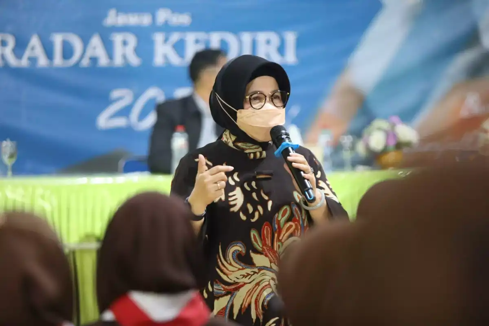
Memberdayakan Pemimpin Masa Depan Melalui Edukasi Berkualitas
Radar Kediri Institute (sering disebut RK Institute) lahir dari semangat untuk meningkatkan kualitas literasi dan keahlian relasional masyarakat. Sebagai bagian dari jaringan media Jawa Pos, kami menghadirkan kurikulum yang selaras dengan kebutuhan industri saat ini.
Setiap program dirancang bukan sekadar transfer ilmu — melainkan proses pembentukan karakter dan keahlian yang diterapkan langsung dalam kehidupan profesional.
Melalui dukungan penuh dari Jawa Pos Radar Kediri, kami memiliki akses terhadap data riil dan praktik lapangan yang memastikan setiap materi pelatihan kami selalu relevan dan up-to-date.
Tahun Pengalaman
Narasumber Profesional
Alumni Pelatihan
Misi Kami
Menyelenggarakan pelatihan berbasis kompetensi yang aplikatif serta mengembangkan komunitas sinergis guna memajukan kualitas sumber daya manusia di wilayah Kediri Raya, Kabupaten Nganjuk dan sekitarnya.
Visi Kami
Menjadi institusi pelatihan terkemuka di Jawa Timur yang mampu mencetak generasi kreatif, profesional, dan berdaya saing tinggi di era transformasi digital.
Nilai Kami
Integritas dalam mengelola dan menyampaikan setiap metode pembelajaran; dan fokus pada hasil yang nyata bagi setiap peserta yang mengandalkan kami.
Transformasi Edukasi untuk Masa Depan Lebih Baik
Kami memahami bahwa tantangan zaman terus berubah. Oleh karena itu, kami menawarkan berbagai keunggulan yang dirancang untuk mendampingi proses belajar Anda secara efektif dan efisien.
- Pilihan jadwal belajar yang fleksibel
- Instruktur berpengalaman langsung dari industri
- Konten materi yang interaktif dan menarik
- Platform pembelajaran yang modern
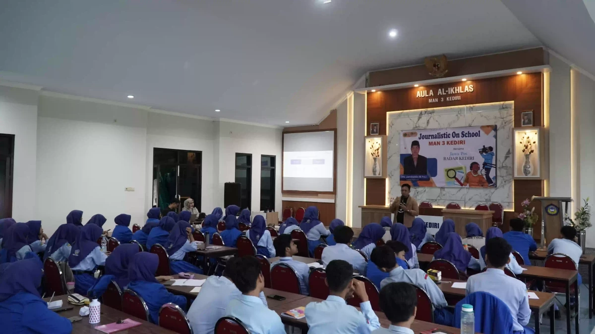
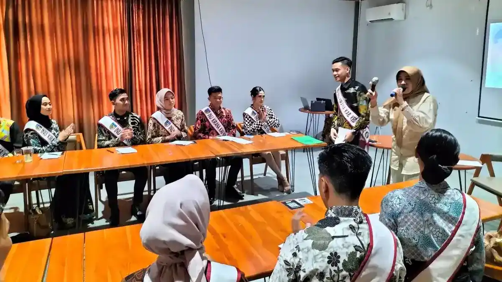
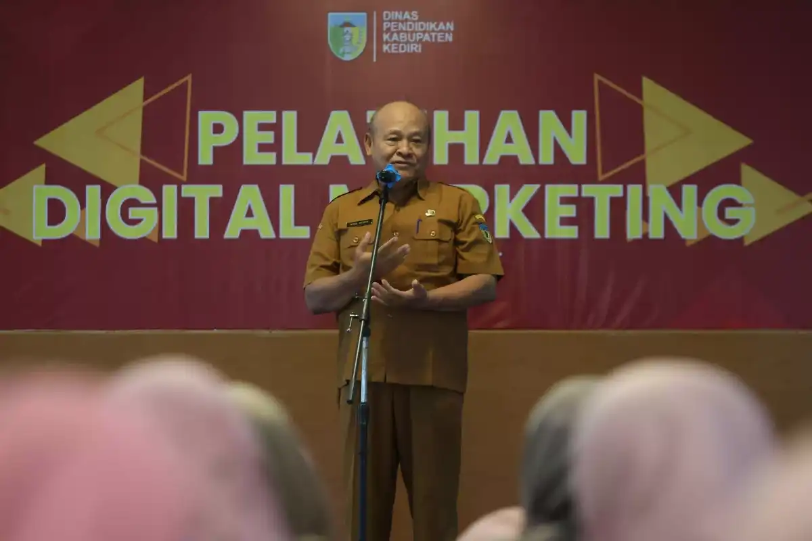
Memberdayakan Pikiran, Membentuk Masa Depan
Kami percaya bahwa pendidikan bukan sekadar transfer ilmu, melainkan proses pembentukan karakter dan keahlian yang diterapkan langsung dalam kehidupan profesional.
Melalui dukungan penuh dari Jawa Pos Radar Kediri, kami memiliki akses terhadap data riil, tren, dan praktik lapangan yang memastikan setiap materi pelatihan kami selalu relevan dan up-to-date.
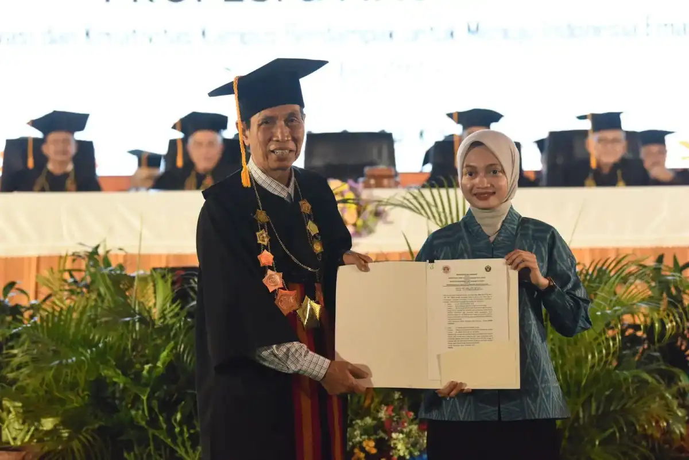
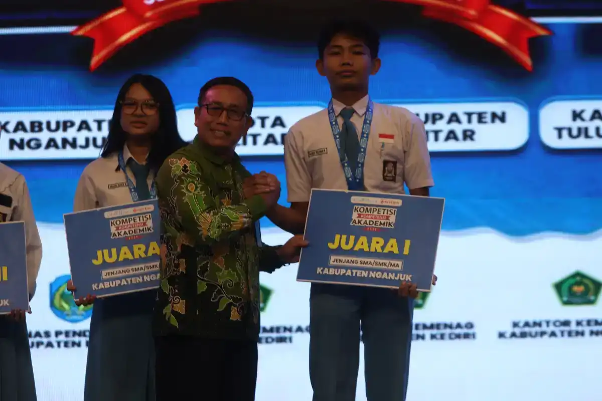
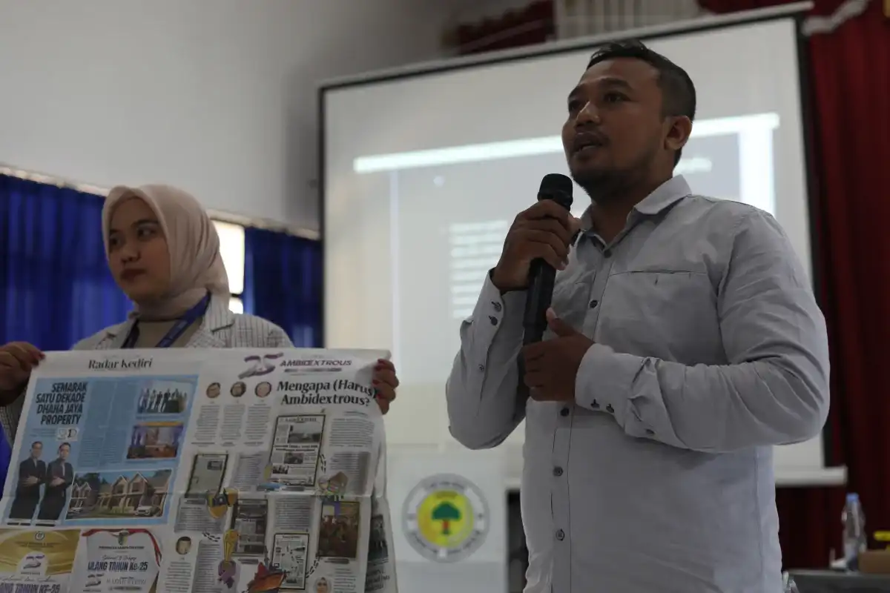
Tujuan Strategis
Menjadi ekosistem belajar yang ideal di mana setiap individu memiliki kesempatan yang sama untuk mengembangkan potensi terbaik mereka di bidang komunikasi dan teknologi.
Pandangan Masa Depan
Terus berinovasi dalam menghadirkan solusi edukasi yang mampu menjawab tantangan industri kreatif dan media massa yang kian dinamis di tingkat nasional.
Sumber Daya
Akses berbagai informasi penting untuk mendukung kelancaran program pelatihan Anda.
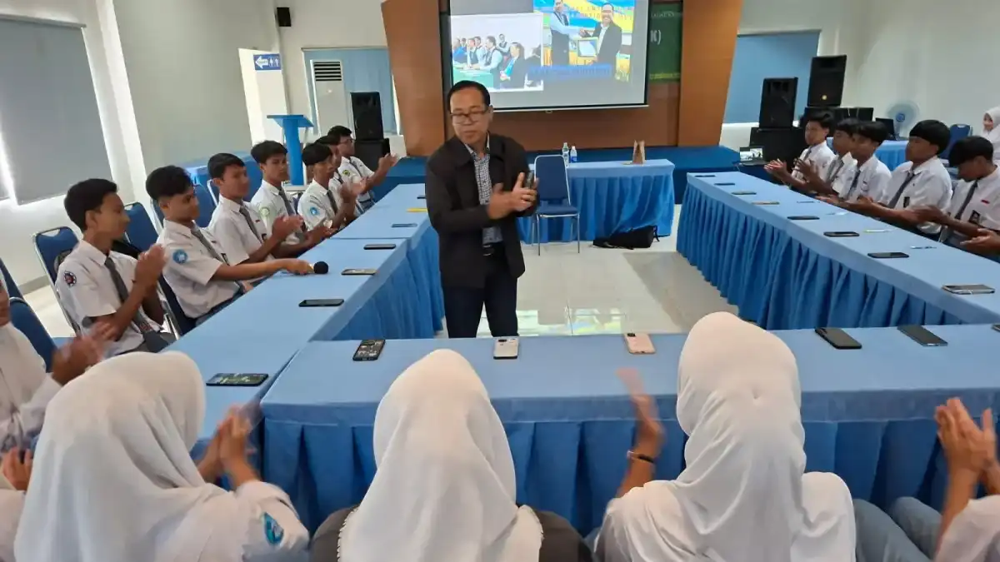
Baru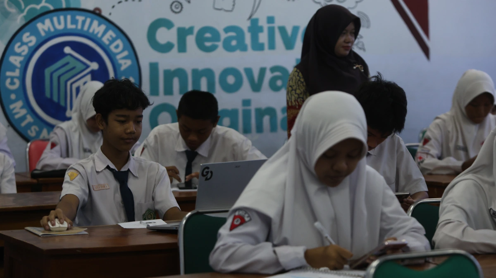
PopulerProgram Beasiswa
Kesempatan potongan biaya pelatihan bagi pelajar dan mahasiswa berprestasi.
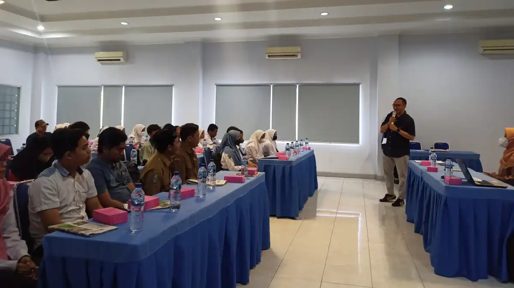
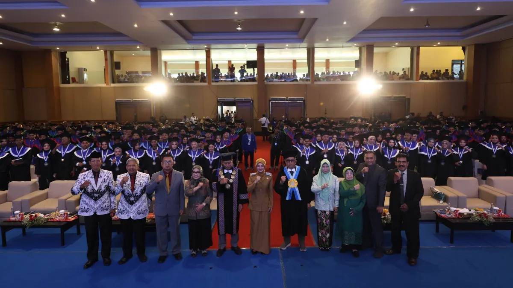
TrendingLiputan Institusi Mitra
Bergabunglah dalam jaringan alumni untuk berbagi peluang kerja dan proyek.
Ayo Bergabung
Jangan lewatkan kesempatan untuk meningkatkan kapasitas diri bersama para ahli di bidangnya.
Batas Akhir Pendaftaran Gelombang I
Segera daftarkan diri Anda atau instansi Anda untuk mendapatkan penawaran harga khusus dan materi eksklusif bulan ini.
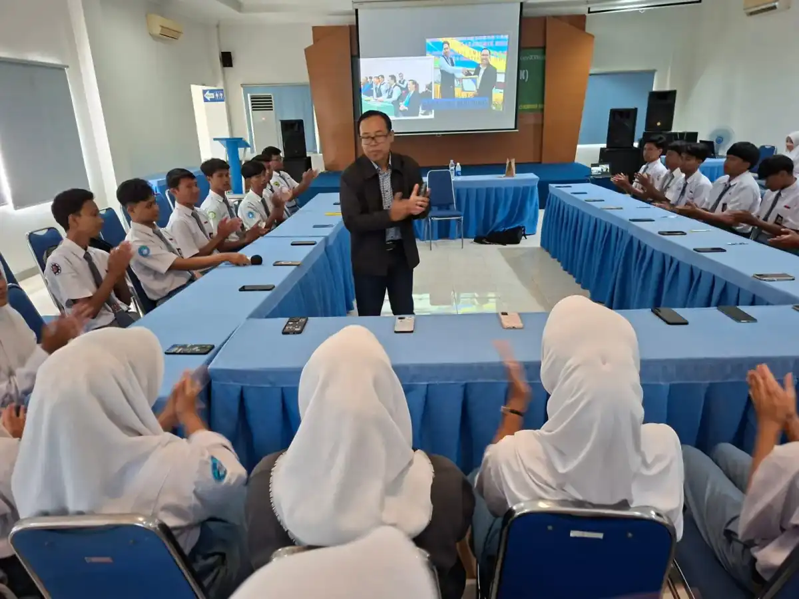